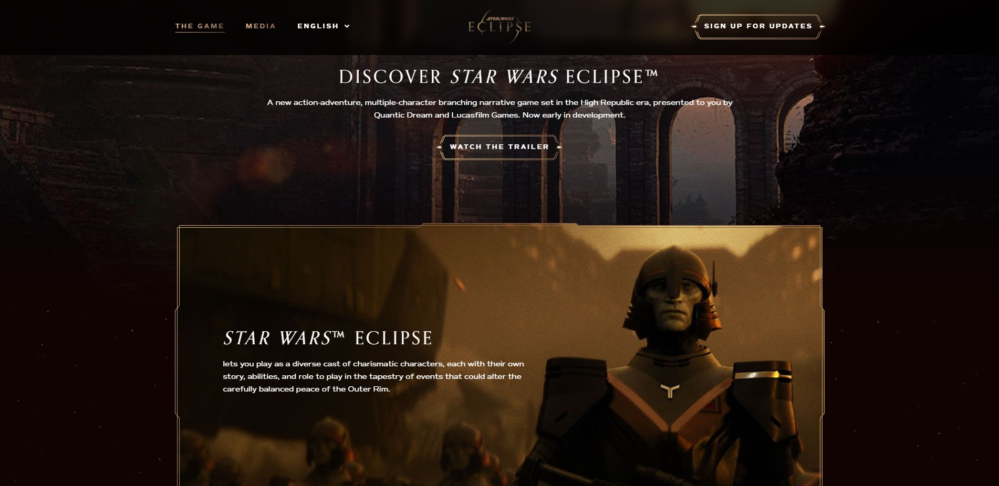
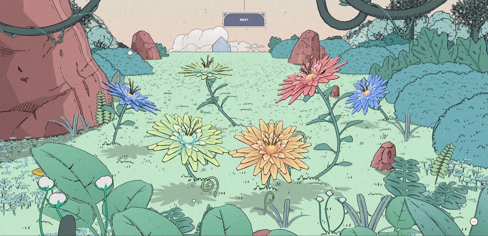
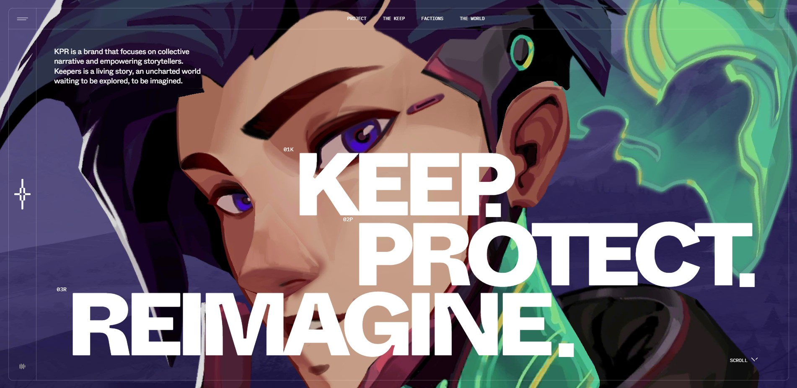

I like how aesthetic and simple this website’s design is. The panels fading into view on scroll is also a nice touch that I would like to add to my own Star Wars site.
This site caught my attention right away. The imagery was already so beautiful but then the calming, magical music and voiced storytelling started up and made me love it even more. The next page was my favorite though. I spent about 5 minutes just moving the camera around and pulling different flowers out of the ground with my mouse. The part with the flying birds felt like a real video game. Just such a fun and interactive experience.
This website had a lot of information and story so I didn’t dig through all of it but I love the style and cohesive technological theme it’s got going on. The first page also had lovely art that reminded me of that Netflix show Arcane and it has that same 3D mouse movement effect from the Nomadic Tribe website. I loved how video game/anime like it all felt.
